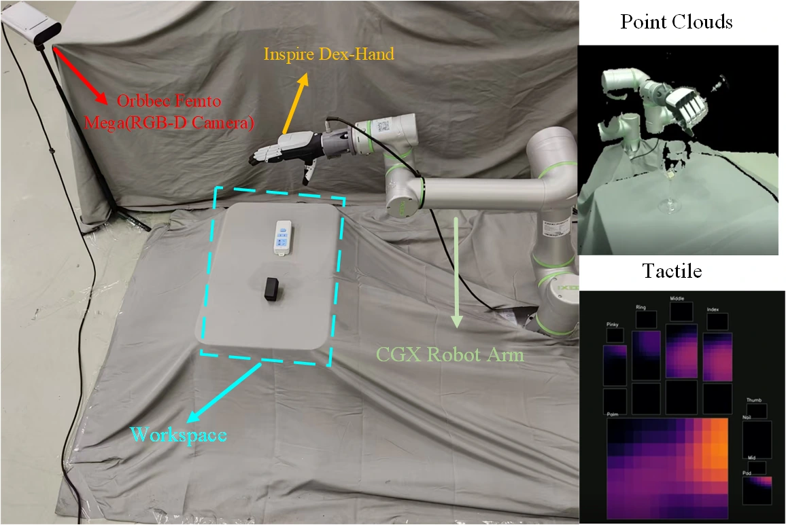
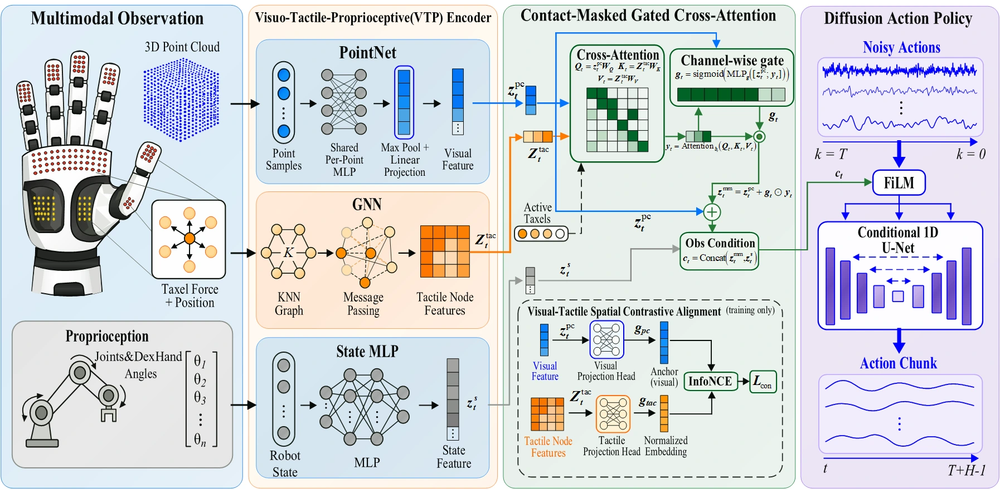

Preserve contact geometry
PointNet encodes the scene. A spatial KNN graph encoder retains a feature for every taxel, using its force and 3D position.
Scene geometry meets localized contact.
A contact-aware 3D diffusion policy that learns when and where to use touch.
Selected rollout excerpts. Full recordings and tactile observations below.
THE IDEA / 01
Vision describes the scene. Touch reveals the local interactions that vision can miss.
Occlusion, transparent objects, and small contact interfaces make dexterous manipulation difficult. Our policy places scene points and hand taxels in a common 3D coordinate frame, preserves tactile geometry with a graph encoder, and selectively fuses active contacts into the visual representation.
A training-only spatial contrastive objective aligns the two modalities. The fused features and proprioception condition a diffusion policy that generates action sequences.
Inside the policyREAL-WORLD DEMONSTRATIONS / 02
Four manipulation tasks on a dexterous arm–hand platform. Explore camera recordings alongside the tactile observation view.
Camera and tactile recordings are separate rollouts; playback is independent. All recordings are silent.

A CGX C6 arm with an Inspire Robots RH56DFTP tactile hand and an Orbbec Femto Mega RGB-D camera. The hand supplies 1,062 distributed taxels. Each task uses 40 expert demonstrations, one training seed per method, and 30 evaluation trials.
METHOD / 03
A compact visual representation meets a spatial graph of tactile contacts, followed by adaptive fusion and action diffusion.
PointNet encodes the scene. A spatial KNN graph encoder retains a feature for every taxel, using its force and 3D position.
Contact-masked gated cross-attention (CMGCA) selects force-activated taxels. A channel-wise gate controls their residual contribution to vision.
The fused representation and proprioception condition a 1D diffusion policy. Spatial contrastive alignment is used only during training.

No active contact? The visual representation passes through. With no valid contact, the tactile correction is zero. Contrastive projection heads are removed at inference.
SIMULATION / 04
Three Adroit tasks and all 50 Meta-World tasks. Ten demonstrations per task, three training seeds, and the same evaluation protocol across methods.
Selected simulation recordings. Videos loop independently.
SR5 (%) · Mean ± population SD across three seeds. Whiskers show one SD.
SR5 averages the five best checkpoint success rates within each training run; the reported mean and population standard deviation are then computed across three seeds. Every checkpoint is evaluated over 20 episodes, and each method is trained for 2,000 epochs with 10 demonstrations per task.
The overall 53-task average is task-weighted. These are best-five-checkpoint results, rather than final-checkpoint success rates. Gains are concentrated in Adroit and the harder Meta-World groups; DP3 has the highest Easy-group mean (91.2%).
| Benchmark / Task | DP | DP3 | 3D-ViTac | AdapTac | Ours |
|---|
Results could not be loaded. Please refresh the page to try again.
REAL-ROBOT EVALUATION / 05
Thirty trials per method and task. The proposed policy reaches 52.5% mean success across four real-robot tasks.
| Method | Pick-and-place | Drawer | Plug insertion | Pouring | Mean (%) |
|---|---|---|---|---|---|
| DP | 8/30 | 3/30 | 3/30 | 12/30 | 21.7 |
| DP3 | 12/30 | 7/30 | 2/30 | 8/30 | 24.2 |
| 3D-ViTac | 15/30 | 13/30 | 4/30 | 14/30 | 38.3 |
| AdapTac | 14/30 | 16/30 | 5/30 | 16/30 | 42.5 |
| Ours | 15/30 | 18/30 | 9/30 | 21/30 | 52.5 |
Reading the evidence. Results use one training seed per method and task; comparisons are descriptive. Precise insertion remains challenging, with 9/30 successes. The videos show selected rollouts.
Cumulative ablations. Average simulation SR5 decreases from 80.3% to 78.4% without contrastive training, to 76.6% after additionally replacing CMGCA with concatenation, and to 72.8% after also replacing the GNN with an MLP.
Learning dexterous manipulation
through vision and touch.